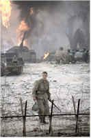
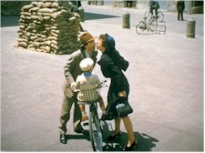
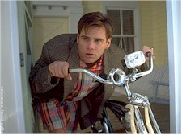
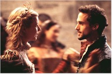

Contents | Features | Reviews | News | Archives | Store

Contents | Features | Reviews | News | Archives | Store
 |
71st Academy Awards (1999) |
Oscar Studies History
71st Academy Awards Nominations Announced
Berlin, 09 February -- Elizabethan England upstaged World War II and foreign language fare surged to the fore as Kevin Spacey and Academy of Motion Picture Arts and Sciences president Robert Rehme announced the nominees for the 71st anual Academy Awards shortly after 5:30 am PST this morning from Los Angeles.
To no one’s surprise, DreamWorks’ Saving Private Ryan received 11 nominations, including Best Picture, Best Director (Steven Spielberg) and Best Actor (Tom Hanks). Yet that number is second to the 13 Oscar nominations for the heavily promoted Miramax release Shakespeare in Love, including Best Picture, Best Director (John Madden), Best Actess (Gwyneth Paltrow, her first), Best Supporting Actress (Judi Dench), Best Supporting Actor (Geoffrey Rush, who already has a statuette for Shine), and, of course, Best Original Screenplay (Tom Stoppard and Mark Norman). That’s one shy of the record-setting 13 nominations posted by Titanic last year.
Gramercy’s Elizabeth was third in the running with seven nominations, followed by 20th Century Fox’s The Thin Red Line and Miramax’s Life is Beautiful with seven nods each. Prominent films not nominated for Best Picture include The Truman Show, A Simple Plan, Beloved, Bulworth, Pleasantville, Gods and Monsters, Waking Ned Devine, The Opposite of Sex, Out of Sight and Affliction.
The fifth Best Picture nominee is the other big story of this year’s Oscar race, as Roberto Benigni’s Italian import Life is Beautiful received nominations in the Best Picture, Best Actor, Best Director and -- this is where it gets interesting -- Best Foreign Language Film categories. The seven total nominations for the film push it ahead of previous foreign language record holders Das Boot (1982) and Fanny & Alexander (1983), both of which had six. Joining this art-house favorite in multiple nominations is Walter Salles’ Brazilian drama Central Station, which earned a Best Actress nomination for Fernanda Montenegro as well as a Best Foreign Language Film nod. Benigni’s nomination for both Best Picture and Best Foreign Film is the first time that’s happened since Costa-Gavras’ Z in 1969.
Four of the five Best Picture nominees saw their directors nominated in that category, with only Peter Weir failing to see his work nominated for the highest profile award (Elizabeth took The Truman Show’s spot in the Best Picture sweepstakes).
The diversity of subjects in this year’s Best Picture race failed to materialize, as Oscar voters gave nominations to two looks at the World War II experience (Saving Private Ryan and The Thin Red Line) and two movies -- one serious, one a bit cheeky -- set in Elizabethan England (Elizabeth and Shakespeare in Love). Thus, not only were two other similar-themed films (The Truman Show and Pleasantville) shut out, but highly touted titles such as Gods and Monsters, Affliction and A Simple Plan had to make do with acting and screenplay nods.
And as far as actors go, Jim Carrey’s work was elbowed out of the Best Actor category, as joining Hanks is Roberto Benigni (Life is Beautiful), Ian McKellen (Gods and Monsters), Nick Nolte (Affliction, although his name had been mentioned as a possible Best Supporting Actor nominee for The Thin Red Line), and Edward Norton (American History X). This represents a close imitation of many of the more prominent critics’ awards for the year, which left such worthy performers as Brendan Gleeson (The General), Warren Beatty (Bulworth), John Travolta (A Civil Action), Joseph Fiennes (Shakespeare in Love), Bill Murray (Rushmore) and Stephen Fry (Wilde) wanting.
The Best Actress category was even more volatile, with Cate Blanchett in Elizabeth, Meryl Streep in One True Thing and Emily Watson in Hilary and Jackie rounding out the final five. Those left out of the final balloting include Cameron Diaz (There’s Something About Mary), Susan Sarandon (Stepmom), Jane Horrocks (Little Voice) and Oprah Winfrey (Beloved). In fact, here’s a good place to mention the snubbing of 1998’s most original comedy, The Opposite of Sex, for which Christina Ricci, Lisa Kudrow and Don Roos’ script should’ve been nominated, at least. Interesting fact: both Blanchett and Judi Dench (Best Supporting Actress, Shakespeare in Love) are nominated for playing the same person, Elizabeth I.
Here in northeast Germany, where light snow has fallen on and off the day before the opening of the 49th edition of the revered Berlin International Film Festival, director Moritz DeHadeln has once again made a series of selections that appear downright prescient: in addition to Shakespeare in Love and The Thin Red Line in the Competition section (with Paltrow and Sean Penn scheduled to appear), Meryl Streep is expected at a press conference following the non-competitive bow of One True Thing, while Spielberg is already here in his role as producer for the European premiere of James Moll’s Best Documentary Feature nominee The Last Days, which is being presented in the pan-sectional "Documents Against Forgetting" program (also out of competition). Berlin-watchers will also remember that Central Station won Golden Bears at the 1998 edition of the festival for Best Picture and Best Actress. If these weren’t the hot tickets before, you can bet they will be now. For more information on the Berlin International Film Festival, click here.
All in all, this field is one of the most interesting and varied in quite some time. The Oscars will be presented March 21 (the first Sunday ceremony) in Los Angeles.
Contents | Features | Reviews
| News | Archives | Store
Copyright © 1999 by Nitrate Productions, Inc. All Rights
Reserved.